ゾンビをたおそう
🎯 この章でできるようになること
- オブジェクト変数で、ゾンビ1体ずつに体力を持たせられる
- 3Dの当たり判定（Collision in 3D）を使える
- タイマーで、何秒かごとにゾンビをわかせられる
- HP が 0 になったら、ゲームをやり直しにできる
5-1. この章で作るしくみ
ゾンビは弾を3発当てるとたおれます。
トラックでひいても、たおせます。
たおした数を「Kills」として画面に出し、3秒ごとに新しいゾンビがわいてくるようにします。
そのゾンビの体力を1へらす
Kills を1ふやす
ゾンビがトラックに近い
Kills を1ふやす
ランダムな向きを決めて、そこにゾンビを作る
5-2. 変数と文字を用意しよう
シーンエディターで、一覧の Zombie をクリックします。
左の「Object Variables」の右の、四角から矢印が出たマークを押します。
「Add a variable」を押して、名前を Health、型は「Number」のまま、値を 3 にして「Apply」。
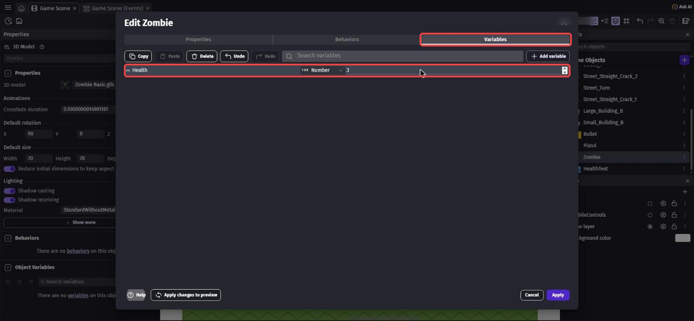
Health = 3（赤枠）第4章の PlayerHealth は「シーン変数」で、ゲーム全体に1つだけです。
Health はゾンビ1体ずつが持っているので、1体目は残り1、2体目は残り3、のように別々に数えられます。
シーンの何もないところをクリックして、「Scene Variables」の編集画面を開きます（第4章と同じ）。
「Add variable」で次の2つを作ります。どちらも型は Number、値は 0 のままでOK。
Kills… たおしたゾンビの数SpawnAngle… 新しいゾンビをわかせる向き
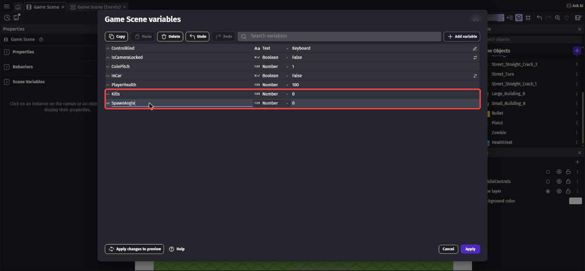
Kills と SpawnAngle を追加（赤枠）一覧の HealthText の「⋮」から「Duplicate」（コピーを作る）を選びます。
「HealthText2」ができて名前を入力できる状態になるので、KillText と入力して Enter。
左の「Text」の欄を Kills: 0 に書きかえます。
次に、Layers パネルで UI の「○」を●にしてから、KillText の「⋮」→「Add instance to the scene」でシーンに置きます。
置いた文字をクリックして、X を 20、Y を 160 にします（HP の下）。
最後に、●を Base layer にもどしておこう。
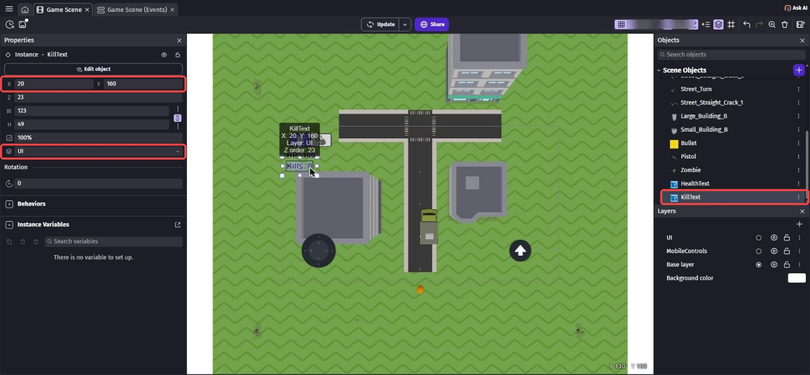
ドラッグしても置けないとき
一覧からシーンへのドラッグがうまくいかないことがあります。
そのときは「⋮」→「Add instance to the scene」を使うと、画面のまん中に置かれます。
5-3. 弾でたおそう
イベントシートで、新しいグループ Battle（たたかい）を作り、Shift + D で中にイベントを作ります。
条件は collision で検索して「Collision in 3D」（3Dでぶつかった）を選びます。
Object は Bullet、Other object は Zombie。
「3D capability」の欄は自動で「Object3D」になるので、さわらなくてOK。
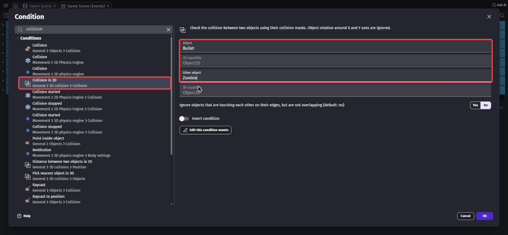
アクションは2つ。
- 「Delete the object」で
Bullet change object variable valueで検索 →「Change object variable value」、Object はZombie、Variable はHealth、Modification's sign は「- (subtract)」、Value は1
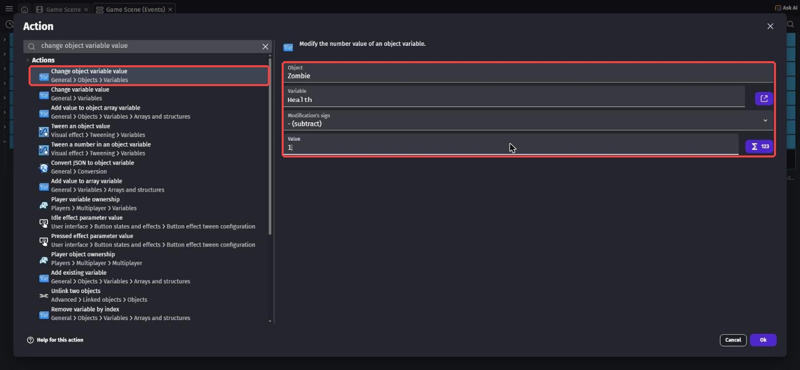
高さ（Z）もふくめて、本当にぶつかっているかを調べてくれます。
ふつうの「Collision」は上から見た形だけで調べるので、3Dのゲームではこちらを使います。
Shift + A で新しいイベントを作ります。
条件は object variable value で検索 →「Object variable value」。
Object は Zombie、Variable は Health、Sign of the test は「≤ (less or equal to)」（〜以下）、値は 0。
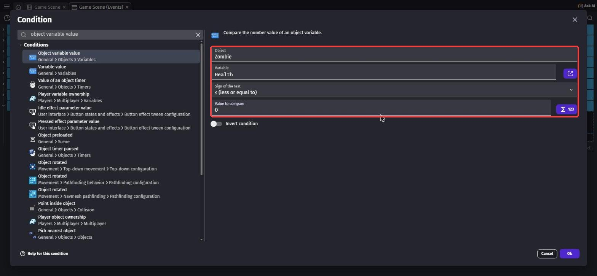
アクションは2つ。
- 「Delete the object」で
Zombie - 「Change variable value」で
Killsを「+ (add)」（足す）で1
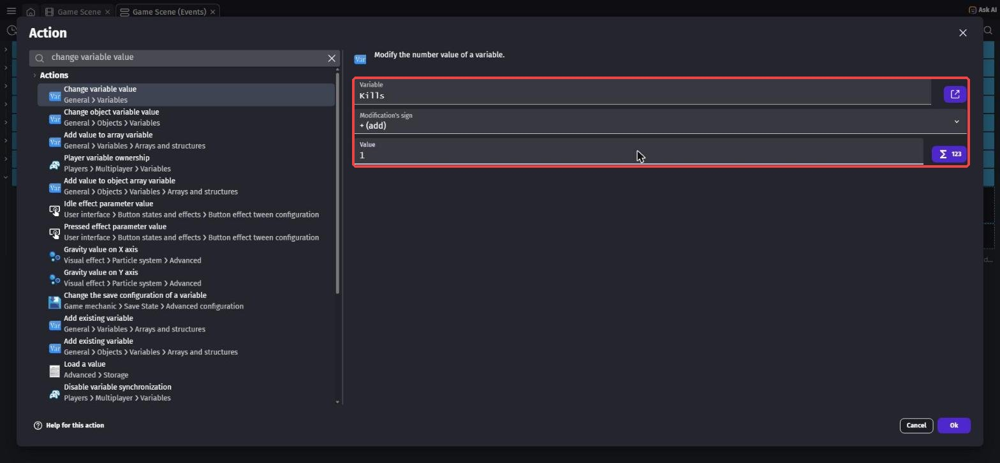
5-4. トラックでたおそう
Shift + A で新しいイベントを作ります。
条件は2つ。
- 「Variable value」で
InCarが True（乗っている） - 「Distance between two objects」で
ZombieとTruck、距離80
アクションは、ステップ5と同じ2つ（Zombie を消す、Kills に1を足す）です。
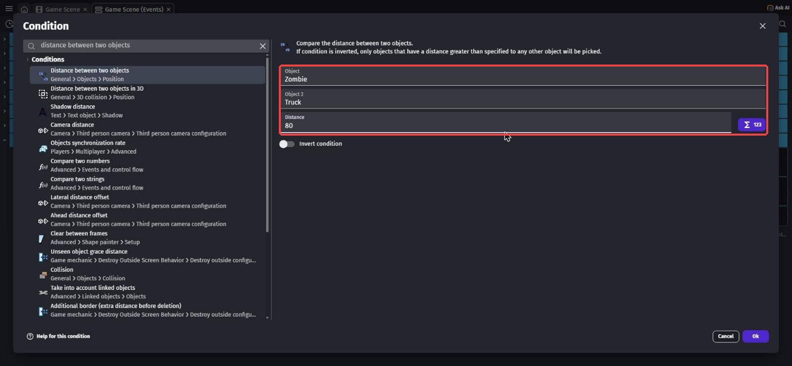
同じアクションを何回も作るのがめんどう
ステップ5のアクション2つを、Shift を押しながらクリックして両方選び、Ctrl + C（Mac は ⌘ + C）でコピーできます。
ステップ6のイベントのアクション側をクリックして Ctrl + V（Mac は ⌘ + V）で貼りつけよう。
5-5. ゾンビをわかせよう
Shift + A で新しいイベントを作ります。
条件は timer で検索 →「Value of a scene timer」（シーンのタイマーの値）。
Timer's name は "SpawnTimer"（ダブルクォーテーションもつける）、Sign of the test は「≥ (greater or equal to)」（〜以上）、Time in seconds は 3。
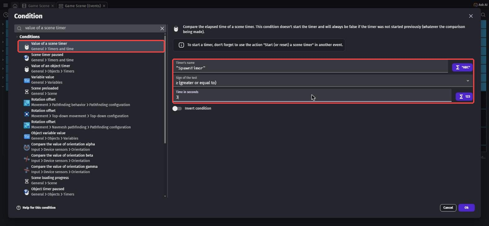
"SpawnTimer" が 3 秒以上（赤枠）アクションは3つです。
start (or reset) a scene timerで検索 →「Start (or reset) a scene timer」、名前は"SpawnTimer"（0にもどして、また数えはじめる）- 「Change variable value」で
SpawnAngleを「= (set to)」で下の式 - 「Create an object」で
Zombie、X と Y は下の式
RandomInRange(0, 359)Player.X() + XFromAngleAndDistance(SpawnAngle, 700)Player.Y() + YFromAngleAndDistance(SpawnAngle, 700)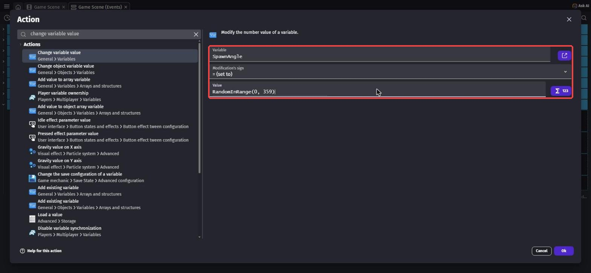
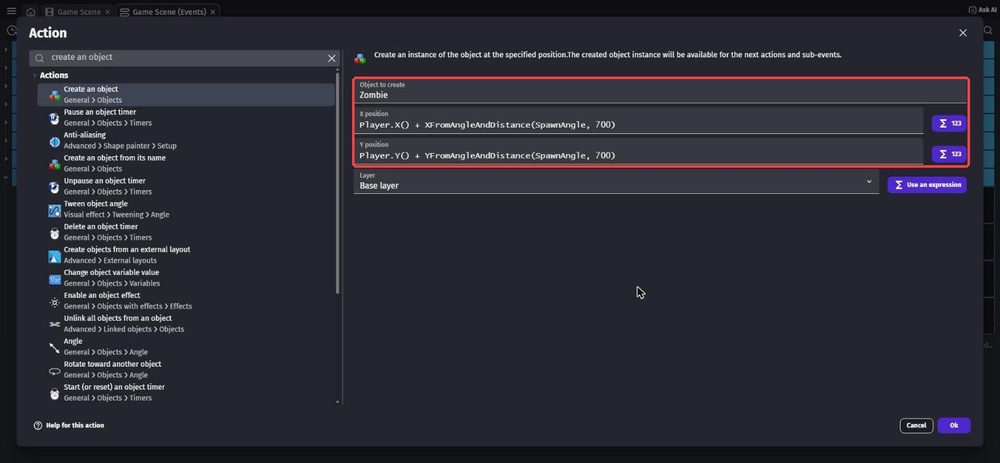
第3章で使った XFromAngleAndDistance と組み合わせると、「主人公を中心にした円の上の、どこか1か所」になります。
だから、ゾンビはいつも主人公から同じくらいはなれた、いろいろな方向からやってきます。
タイマーは、スタートさせないと数えはじめません。
Shift + A で新しいイベントを作り、条件は at the beginning で検索 →「At the beginning of the scene」。
アクションは「Start (or reset) a scene timer」で "SpawnTimer"。
5-6. Kills とゲームオーバー
Shift + A で新しいイベントを作ります。
条件はなし。
アクションの画面で、左の一覧から KillText を選び、「Text」を選びます。
Text の欄に次の式を入れます（第4章の HP と同じやり方）。
"Kills: " + ToString(Kills)Shift + A で新しいイベントを作ります。
条件は「Variable value」で PlayerHealth、Sign of the test は「≤ (less or equal to)」、値は 0。
アクションは change the scene で検索 →「Change the scene」、Name of the new scene は一覧から「Game Scene」。
今のシーンをもう一度始めるので、最初からやり直しになります。
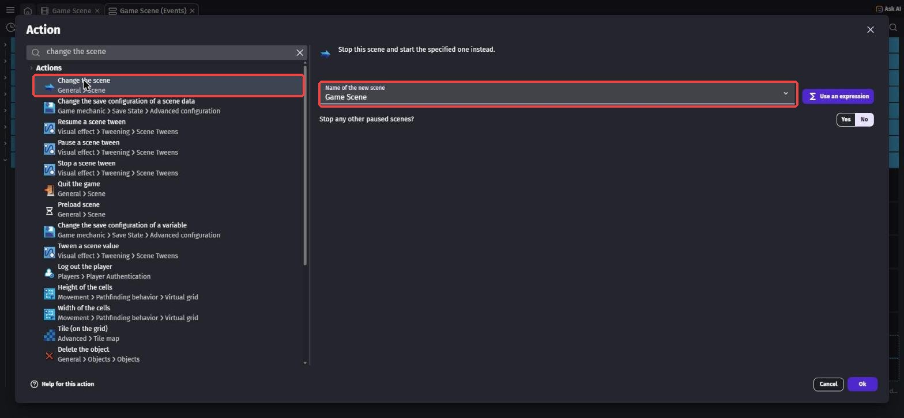
5-7. たたかってみよう
保存してから Preview します。
ゾンビに弾を3発当てるとたおれて、左上の Kills がふえます。
トラックに乗って、ゾンビをひいてみよう。
3秒ごとにゾンビがふえていくので、どこまでたおせるかチャレンジ！
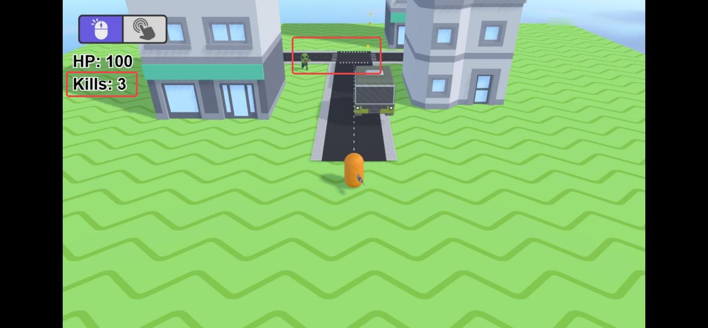

💪 やってみよう
ゾンビの体力（3）、わく間かく（3秒）、わく距離（700）を変えてみよう。
Kills が 10 をこえたら、わく間かくを短くして、だんだんむずかしくなるようにもできるよ。
ヒント
ステップ7の「3」のところに式を書くこともできます。
たとえば max(1, 3 - Kills * 0.1) にすると、たおすほど間かくが短くなって、いちばん短くても1秒になります。
5-8. 🚨 つまずきポイント集
弾が当たってもゾンビがたおれない
原因: Health を Zombie の「オブジェクト変数」ではなく、シーン変数に作ってしまった。
直し方: 一覧の Zombie をクリックして、左の Object Variables に Health（3）があるか確かめよう。
ゾンビがわいてこない
原因: タイマーをスタートするイベント（ステップ9）がない、またはタイマーの名前がちがう。
直し方: 3か所の "SpawnTimer" が、大文字・小文字までまったく同じか確かめよう。
トラックでひいてもたおせない
原因: InCar の条件が False になっている。
直し方: ステップ6の条件をダブルクリックして、True を選びなおそう。
Kills の文字が出ない
原因: KillText を置いたとき、●が Base layer のままだった。
直し方: 置いた KillText をクリックして、左のレイヤーの欄を「UI」に変えよう。
5-9. ✅ チェックリスト
全部チェックできたら第5章クリア！
🎉 次回は最終回。音や見た目を仕上げて、みんなに遊んでもらおう。